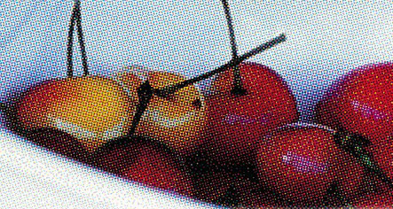

Два разных муара — один клик
Обработка идёт только по яркостному каналу (Y), поэтому цвет скана не плывёт ни на одном из двух этапов.
Сеточный и цветной муар
Резкие одиночные всплески в спектре — классическая интерференционная сетка растровой печати. Ищутся на фоне собственного локального среднего по кругу того же радиуса.
Фактура матовой бумаги
Равномерно повышенное кольцо в спектре, а не единичные точки. Медиана по кругу вместо среднего — чтобы резкие края фото не принимались за текстуру. Низкие частоты не трогает никогда: там живёт композиция кадра.
Потяните за круг — сравните сами
Реальные сканы старых фотографий на матовой бумаге, до и после одного нажатия кнопки в панели плагина.

До ПослеРаньше — вручную. Теперь — само.
Классический FFT/IFFT-плагин десятилетиями остаётся рабочей лошадкой реставраторов — но требует ручной работы со спектром при каждом скане.
Ручная работа со спектром
- 01 Запустить прямое FFT-преобразование
- 02 Вручную стереть ластиком «звёзды» шумных частот
- 03 Запустить обратное IFFT
- 04 Вручную вернуть цвет через смешение слоёв
Один клик
Нажали кнопку. Готово.
- ＋ Сам находит частоты муара и фактуры бумаги
- ＋ Сам решает, где настоящая картинка, а где шум
- ＋ Цвет никогда не плывёт — правится только Y-канал
- ＋ Результат — новым слоем, исходник не трогается
Ограничения, о которых лучше знать заранее
- Обработка идёт в 8 бит на канал — слой экспортируется во временный PNG. Для реставрации в высокой битности классический нативный плагин пока точнее.
- Автоматическое распознавание — статистическая эвристика. На большинстве сканов срабатывает без настройки, но для экстремально сильной текстуры может понадобиться подвинуть ползунки.
- Кольцевой детектор в редких случаях может слегка смягчить настоящий повторяющийся узор на фото — плетение ткани, рябь на воде. Спектрально это иногда неотличимо от фактуры бумаги.
- Проверено на синтетических тестах и реальных сканах в процессе разработки — но не на такой большой выборке, как классический подход, которым пользуются больше 15 лет.
Полный разбор алгоритма, детекторов и настроек — на технической странице →